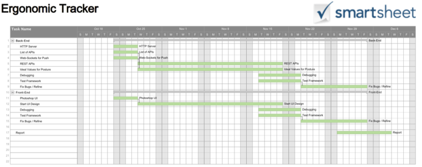
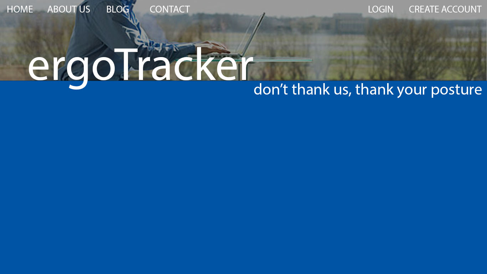
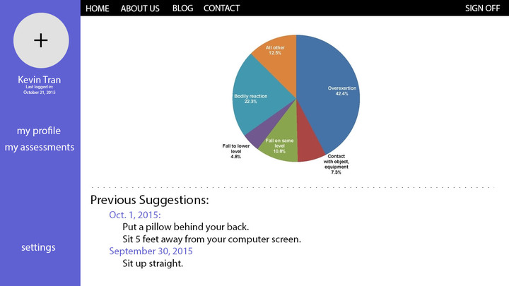

<<<<<<< HEAD
My Page
=======
Ergo Tracker
A solution from the MaxUbi team, to your desk usage problem
View on GitHub Download .zip Download .tar.gz
Motivation
and Problem Statement.
Unhealthy sitting posture for working and studying have been a serious
problem for human health. As we know, the percentage of students
suffered Myopia is surprisingly high in China and India. And most
programmers especially the seniors have experienced different levels of
cervical vertebra related diseases.
Our Ergo Tracker would alleviate the current stressful
situation. By tracking a person’s posture, it could warn users about
their bad posture and collect statistical data to help users better
understand and grow healthy habits.
Team Composition
There are two part to our web application. The User Interface
part which we plan to implement using Angular & Node.js. The
backend in part which we have plans to evaluate a C++
REST server and using libfreenect and integrate it to the
application. You can have a look at the architecture diagram
here<<insert link here>>. This has made us
to form two sub teams as follows
FrontEnd Engineers
1. Kevin Tran(kevintran15)
2. Hien Hoang(royal50911)
BackEnd Engineers
1. Xinyu Zhang(BenBBear)
2. Michael Chang(mchangjs)
3. Ajay Mohan(AjayMarley)
you can direct your specific questions on mnodules to these our team members.
Project
Timeline
We are planning to follow agile methodology for our project.
Although we have a sprint demo every week we combined to perform a
restrospective every two sprints as the length of a sprint is only one.
Below is a timeline of our upcoming sprints. We are using 'Trello.com'
as project management dashboard.

Screens
The following are the UI interfaces screen for the user. As we add
more screens, buttons and functionality we would update this section on
how to use the application.
 
Support
or Contact
Having trouble with Pages? Check out our documentation
or contact support
and we’ll help you sort it out.
>>>>>>>
cd6a9e73e5d02fe096297e9bd19ca15cbfdeec1d